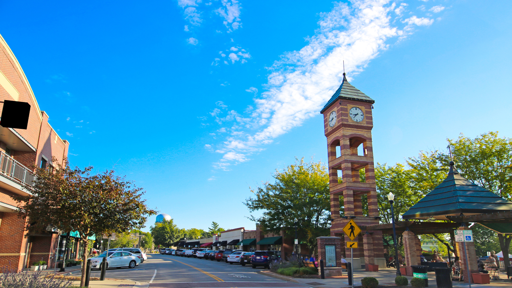
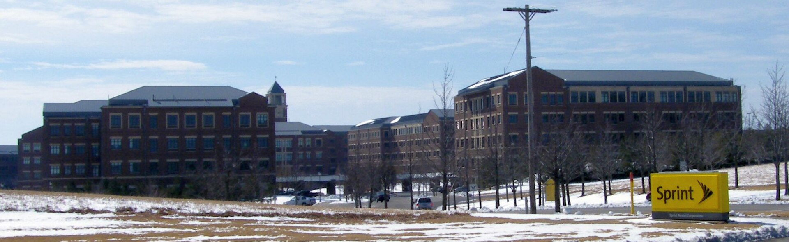

Photo: Overland Park, KS, Link
Overland Park is the second most populous city in Kansas, incorporated in 1960. It is situated in the northeastern part of the state. Source: Overland Park Wikipedia page
The population of Overland Park is 197,062 according to the US Census. Source
The median income is $103,838 according to the US Census. Source This is $31,199 more than the Kansas median, which is $72,639 according to the US Census. Source: US Census

Photo: Americasroof, Link
Overland Park has a lot of companies headquartered there. Here are a few of them.
| Company | Industry | Founded Year | Notes |
|---|---|---|---|
| Sprint Corporation | Telecommunications | 1899 | Now part of T-Mobile; Source |
| Compass Minerals | Chemicals | 1844 | Source |
| Yellow Corporation | Transportation | 1929 | Went bankrupt in 2023; Source |
| Black & Veatch | Engineering | 1915 | Source |